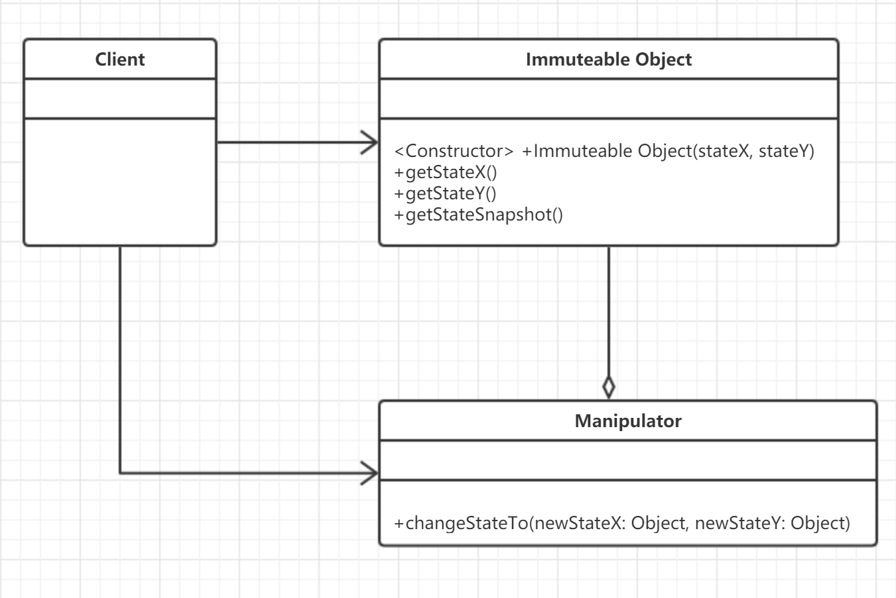
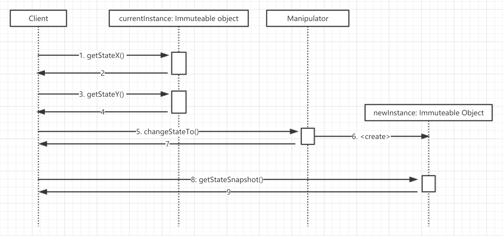

<!DOCTYPE html>
<html>
<head><meta name="generator" content="Hexo 3.9.0">
  <meta charset="utf-8">
  
  <title>Immuteable Object - 不可变对象 | Shaw&#39;s Log</title>
  <meta name="viewport" content="width=device-width, initial-scale=1, maximum-scale=1">
  <link rel="shortcut icon" type="image/ico" href="https://www.flaticon.com/premium-icon/icons/svg/1886/1886189.svg">
  <meta name="description" content="Immuteable Object 不可变对象模式，多线程共享变量的情况下，既能保证共享变量访问的线程安全，又能避免锁本身带来的消耗所产生的模式。  问题起源在项目开发过程中，涉及多线程部分的功能多少都会碰到多线程间共享变量的问题，若还存在多个线程都可能对共享变量进行修改的可能性，为保证访问数据的一致性，通常会使用同步访问控制，如显示锁和CAS操作。而锁操作会带来额外的开销，如上下文切换，等待时间">
<meta name="keywords" content="Design Pattern">
<meta property="og:type" content="article">
<meta property="og:title" content="Immuteable Object - 不可变对象">
<meta property="og:url" content="http://yoursite.com/2019/07/15/Immuteable-object/index.html">
<meta property="og:site_name" content="Shaw&#39;s Log">
<meta property="og:description" content="Immuteable Object 不可变对象模式，多线程共享变量的情况下，既能保证共享变量访问的线程安全，又能避免锁本身带来的消耗所产生的模式。  问题起源在项目开发过程中，涉及多线程部分的功能多少都会碰到多线程间共享变量的问题，若还存在多个线程都可能对共享变量进行修改的可能性，为保证访问数据的一致性，通常会使用同步访问控制，如显示锁和CAS操作。而锁操作会带来额外的开销，如上下文切换，等待时间">
<meta property="og:locale" content="zh-CN">
<meta property="og:image" content="http://yoursite.com/2019/07/15/Immuteable-object/63883199_p0.png">
<meta property="og:updated_time" content="2019-10-31T15:37:49.740Z">
<meta name="twitter:card" content="summary">
<meta name="twitter:title" content="Immuteable Object - 不可变对象">
<meta name="twitter:description" content="Immuteable Object 不可变对象模式，多线程共享变量的情况下，既能保证共享变量访问的线程安全，又能避免锁本身带来的消耗所产生的模式。  问题起源在项目开发过程中，涉及多线程部分的功能多少都会碰到多线程间共享变量的问题，若还存在多个线程都可能对共享变量进行修改的可能性，为保证访问数据的一致性，通常会使用同步访问控制，如显示锁和CAS操作。而锁操作会带来额外的开销，如上下文切换，等待时间">
<meta name="twitter:image" content="http://yoursite.com/2019/07/15/Immuteable-object/63883199_p0.png">
  
  <link rel="stylesheet" href="/css/index.css">
</head>
</html>
<body style="


  background-color: #eff0f6

">
  <div id="container">
    <nav id="nav">
  <header class="header">
    <a href="/" class="title">Shaw&#39;s Log</a>
    <span class="subtitle">talk is cheap, show me your code</span>
  </header>
  <div class="ctnWrap">
    <div class="icons">
      
        
          
            <a href="https://github.com/ShawJie" target="_blank" class="nav-icn iconfont icon-github"></a>
          
        
      
    </div>
    <div class="menu">
      
        
            <a href="/" class="nav-menu ">HOME</a>
          
        
            <a href="/archives" class="nav-menu ">ARCHIVE</a>
          
        
            <a href="/about" class="nav-menu ">ABOUT</a>
          
        
      
    </div>
  </div>
</nav>
    <div id="main"><section class="article">
  <h2 class="title">Immuteable Object - 不可变对象</h2>
  <p class="sub">7月 15, 2019</p>
  <article class="content">
    <h1 id="Immuteable-Object"><a href="#Immuteable-Object" class="headerlink" title="Immuteable Object"></a>Immuteable Object</h1><blockquote>
<p>不可变对象模式，多线程共享变量的情况下，既能保证共享变量访问的线程安全，又能避免锁本身带来的消耗所产生的模式。</p>
</blockquote>
<h2 id="问题起源"><a href="#问题起源" class="headerlink" title="问题起源"></a>问题起源</h2><p>在项目开发过程中，涉及多线程部分的功能多少都会碰到多线程间共享变量的问题，若还存在多个线程都可能对共享变量进行修改的可能性，为保证访问数据的一致性，通常会使用同步访问控制，如显示锁和CAS操作。而锁操作会带来额外的开销，如上下文切换，等待时间等。</p>
<h2 id="模式描述"><a href="#模式描述" class="headerlink" title="模式描述"></a>模式描述</h2><p>而<code>Immuteable Object（不可变对象）</code>意图是通过使用对外可见但不可变对象使被共享对象具有无需加锁的线程安全性。Java种的String、Integer对象即是如此。</p>
<h3 id="模式架构"><a href="#模式架构" class="headerlink" title="模式架构"></a>模式架构</h3><p></p>
<ul>
<li>Immuteable Object：负责存储一组不可变数据，该参与者不对外暴露可以修改内容数据的方法。<ul>
<li>getStateX, getStateY： 这些方法返回<code>Immuteable Object</code>实例所维护的数据的值，这些变量在对象实例化时通过构造器参数获得值。</li>
<li>getStateSnapshot：返回<code>Immuteable Object</code>实例所维护的一组数据的快照</li>
</ul>
</li>
<li>Manipulator：负责维护Immuteable Object对象的状态变更，当相应的实体状态改变时，参与者负责生成新的Immutable Object以反映新的实例状态。<ul>
<li>changeStateTo：根据新的状态值生成<code>Immuteable Object</code>实例</li>
</ul>
</li>
</ul>
<h3 id="模式运行时序图"><a href="#模式运行时序图" class="headerlink" title="模式运行时序图"></a>模式运行时序图</h3><p></p>
<hr>
<p>客户端通过<code>Imuuteable Object</code>提供的get方法获取模式内部的数据值 -&gt; 当客户端需要更新数据值时，调用<code>Manipulator</code>的<code>changeStateTo</code>方法更新数据 -&gt; <code>Manipulator</code>通过创建新的<code>Immuteable Object</code>反映数据的更新，并返回刚创建的不可变对象 -&gt; 客户端调用<code>Immuteable Object</code>对象的<code>getStateSnapshot</code>方法获取实例数据快照</p>
<hr>
<ol>
<li>通过<code>final</code>字段修饰类对象，以及类所持字段，防止其状态被通过获取到的对象直接修改。<br>Ps: 通过<code>final</code>字段修饰的对象可以保证其修饰对象或字段是已完成初始化的</li>
<li>引用了其它可变对象的字段，需要将字段修饰符设为<code>private</code>，且值不能对外暴露，若有方法需要这些字段值，则应该进行防御性复制。</li>
</ol>
<h3 id="实例代码"><a href="#实例代码" class="headerlink" title="实例代码"></a>实例代码</h3><figure class="highlight java"><table><tr><td class="gutter"><pre><span class="line">1</span><br><span class="line">2</span><br><span class="line">3</span><br><span class="line">4</span><br><span class="line">5</span><br><span class="line">6</span><br><span class="line">7</span><br><span class="line">8</span><br><span class="line">9</span><br><span class="line">10</span><br><span class="line">11</span><br><span class="line">12</span><br><span class="line">13</span><br><span class="line">14</span><br><span class="line">15</span><br><span class="line">16</span><br><span class="line">17</span><br><span class="line">18</span><br><span class="line">19</span><br><span class="line">20</span><br><span class="line">21</span><br><span class="line">22</span><br><span class="line">23</span><br><span class="line">24</span><br><span class="line">25</span><br><span class="line">26</span><br><span class="line">27</span><br><span class="line">28</span><br><span class="line">29</span><br><span class="line">30</span><br><span class="line">31</span><br><span class="line">32</span><br><span class="line">33</span><br><span class="line">34</span><br><span class="line">35</span><br><span class="line">36</span><br></pre></td><td class="code"><pre><span class="line"><span class="comment">// Immutable Object</span></span><br><span class="line"><span class="keyword">public</span> <span class="keyword">final</span> <span class="class"><span class="keyword">class</span> <span class="title">MuteClass</span></span>&#123;</span><br><span class="line">    <span class="keyword">private</span> <span class="keyword">static</span> <span class="keyword">volatile</span> MuteClass instance = <span class="keyword">new</span> MuteClass();</span><br><span class="line">    <span class="keyword">private</span> <span class="keyword">final</span> List&lt;String&gt; field;</span><br><span class="line">    </span><br><span class="line">    <span class="function"><span class="keyword">public</span> <span class="title">MuteClass</span><span class="params">(String field1, String field2, String field3)</span></span>&#123;</span><br><span class="line">        <span class="comment">/* 从数据库加载数据并写入内存 */</span></span><br><span class="line">        <span class="keyword">this</span>.field = ...</span><br><span class="line">    &#125;</span><br><span class="line">    </span><br><span class="line">    </span><br><span class="line">    </span><br><span class="line">    <span class="function"><span class="keyword">public</span> <span class="keyword">static</span> MuteClass <span class="title">getInstance</span><span class="params">()</span></span>&#123;</span><br><span class="line">        <span class="keyword">return</span> instance;</span><br><span class="line">    &#125;</span><br><span class="line">    </span><br><span class="line">    <span class="function"><span class="keyword">public</span> String <span class="title">getFieldData</span><span class="params">(<span class="keyword">int</span> index)</span></span>&#123;</span><br><span class="line">        <span class="keyword">return</span> field.get(index);</span><br><span class="line">    &#125;</span><br><span class="line">    </span><br><span class="line">    <span class="function"><span class="keyword">public</span> <span class="keyword">static</span> <span class="keyword">void</span> <span class="title">setInstance</span><span class="params">(MuteClass newInstance)</span></span>&#123;</span><br><span class="line">        instance = newInstance;</span><br><span class="line">    &#125;</span><br><span class="line">    </span><br><span class="line">    <span class="function"><span class="keyword">private</span> <span class="keyword">static</span> List&lt;String&gt; <span class="title">deepCopy</span><span class="params">(List&lt;String&gt; field)</span></span>&#123;</span><br><span class="line">        List&lt;String&gt; cloneObj = <span class="keyword">new</span> List&lt;&gt;();</span><br><span class="line">        <span class="keyword">for</span>(String item : field)&#123;</span><br><span class="line">            cloneObj.add(item);</span><br><span class="line">        &#125;</span><br><span class="line">        <span class="keyword">return</span> cloneObj;</span><br><span class="line">    &#125;</span><br><span class="line">    </span><br><span class="line">    <span class="function"><span class="keyword">public</span> List&lt;String&gt; <span class="title">getFieldList</span><span class="params">()</span></span>&#123;</span><br><span class="line">        <span class="keyword">return</span> collections.unmodifiableCollection(deepCopy(field));</span><br><span class="line">    &#125;</span><br><span class="line">&#125;</span><br></pre></td></tr></table></figure>

<h2 id="总结"><a href="#总结" class="headerlink" title="总结"></a>总结</h2><p>由于不可变对象天然的线程安全性，使得开发过程中可以避免显示锁的使用和消耗</p>
<ul>
<li>适用<ul>
<li>描述对象状态数据变化不频繁</li>
<li>对一组数据进行修改且要保证数据原子性</li>
<li>作为HashMap的Key</li>
</ul>
</li>
<li>注意<ul>
<li>需对可变字段做防御性复制</li>
</ul>
</li>
</ul>

  </article>
  <footer class="f-cf">
    
      <a href="/2019/08/08/concurrenty-pcc-ol/" class="link f-fl">⟵并发控制 - 乐观/悲观锁</a>
    
    
      <a href="/2019/07/12/design-pattern/" class="link f-fr">Design Pattern 基础设计模式⟶</a>
    
  </footer>
</section></div>
    <footer id="footer" class="f-cf">
  Loverconcerto@outlook.com
  
    
      
        · <a href="https://github.com/ShawJie" target="_blank" class="nav-icn">GitHub</a>
      
    
  
  <span class="copyright">All rights reserved @Clover Tuan</span>
</footer>
  </div>
</body>
</html>